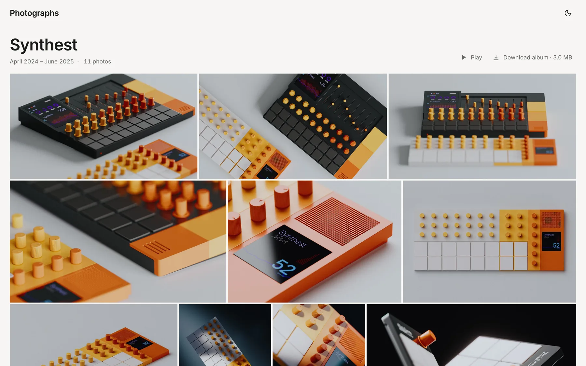
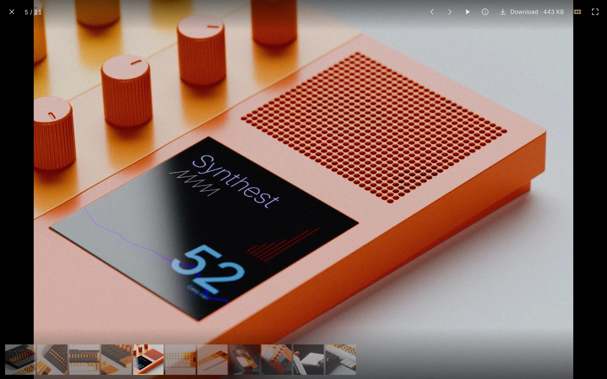
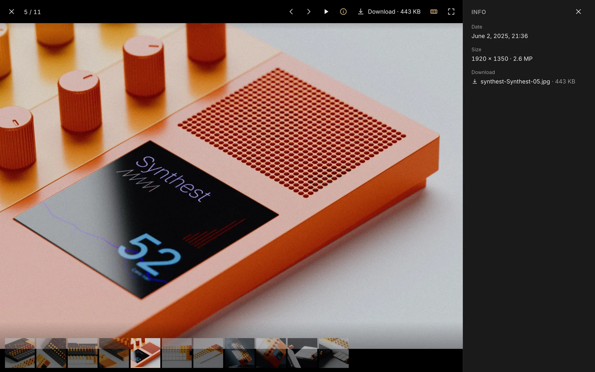
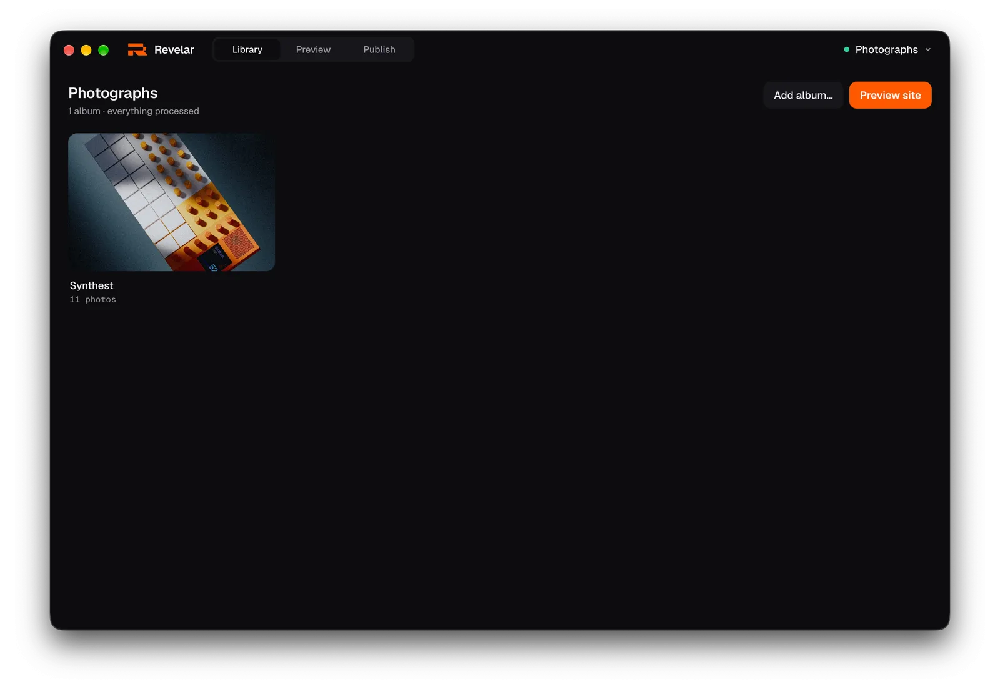
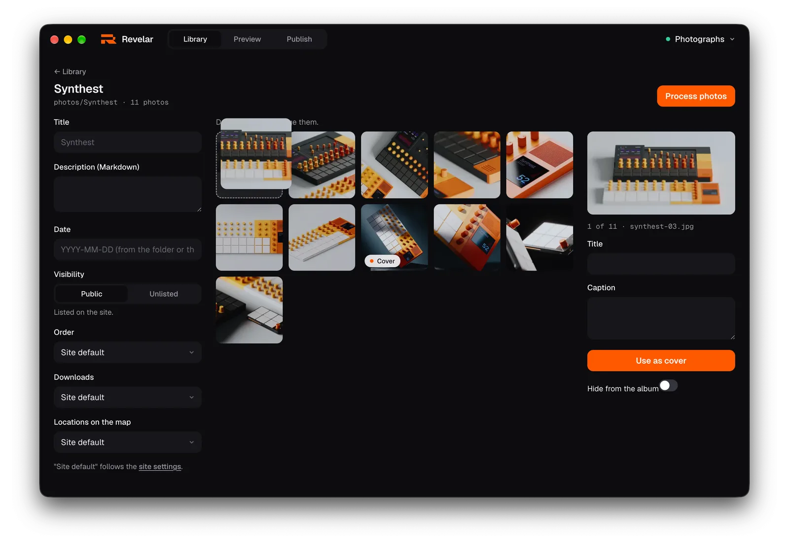
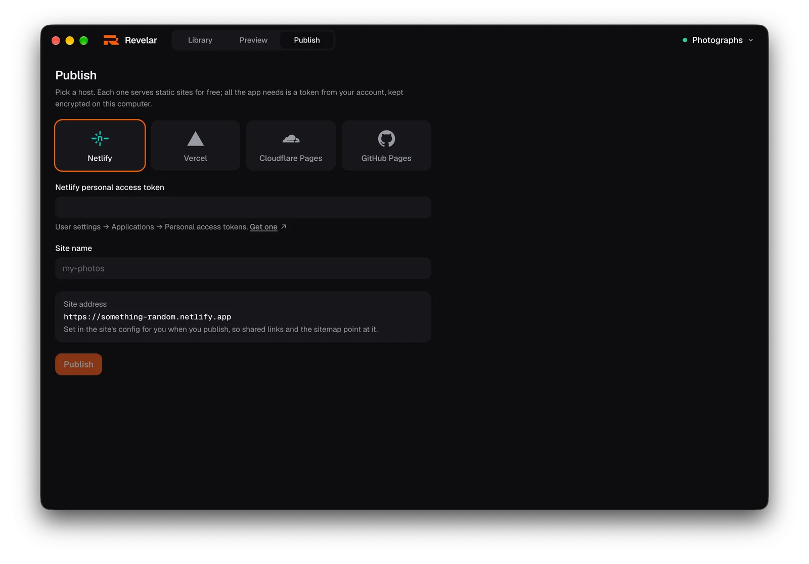

Share your photos as a website of your own, in minutes. Drop a folder of photos into Revelar, make your changes, publish. Fast pages, your domain, your rules. No account, nothing tracked.



Three steps. Folders in, website out.
-
Pick a folder

Choose an empty folder. Its name becomes the name of the site. Put folders of photos inside it and each one becomes an album, cover and all.
-
Make it yours

Drag photos into the order you want. Give them titles and captions, pick a cover, hide the odd one. Then see the finished site right in the window.
-
Put it online

Pick a host, paste a token from your account, publish. Nothing leaves your computer until then, and only the finished site does. Updates are one click.
A site that feels good to look at. And costs nothing to run.
- Opens in a blinkPhotos arrive sharp and fast on any connection, with a soft preview while each one loads. Nobody waits on your site.
- Photos the way they deserveFullscreen, edge to edge. Swipe or use the arrow keys, play a slideshow, or open the details: camera, exposure and place.
- Show where you werePhotos with a location appear on a map, exact or softened to about a kilometre. Or keep the map off.
- Let people keep a photoOffer a large JPEG, the original file, or a zip of the whole album. Or offer nothing. Your call, per album.
- Some albums, for some peopleGive an album a password and only they can open it. The lock is in the files themselves, so no server has to keep your secrets.
- Looks right day and nightThe site follows each visitor's light or dark setting, in the accent colour you choose.
Put it anywhere. Four hosts with free plans, one click each. Or any server that serves files.
- Netlifynetlify.app
- Vercelvercel.app
- Cloudflare Pagespages.dev
- GitHub Pagesgithub.io
- Your own serverupload the folder
Questions
Is it free?
Yes. The app and its code are open source under the MIT licence. The hosts have free plans that fit a photo site comfortably.
Where do my photos go?
Nowhere, until you publish. Revelar works in the folder on your Mac. When you publish, only the finished site goes to the host you picked; the tokens for your hosts live in the macOS Keychain.
Can I use my own domain?
Yes. Set the address in site settings and point the domain at your host.
Which Macs does it run on?
Any Mac on macOS 13 or newer. The download button picks the build for your Mac; there is one for Macs with Apple chips (M1 and later) and one for Intel Macs, both signed and notarized. Windows and Linux are not there yet.
Where do my edits go?
Into the folder, as small text files next to the photos. Move the folder, back it up, or edit it by hand.
How fast is it, really?
Fast. Every page is plain HTML, built ahead of time with SvelteKit, so no server does any work when someone visits. Photos are resized to several sizes and encoded as AVIF and WebP, and an album page loads only small versions until you open one, so even a big album stays light. Hosts serve it from locations near your visitors.
How do updates work?
The app checks the releases on GitHub and installs the next version on its own.
I prefer a terminal.
The same engine is on npm: npm install @index84/revelar, then
npx revelar init and npx revelar build in a folder of
photos. A site folder works with both the app and the command line. Details in the
repository ↗.